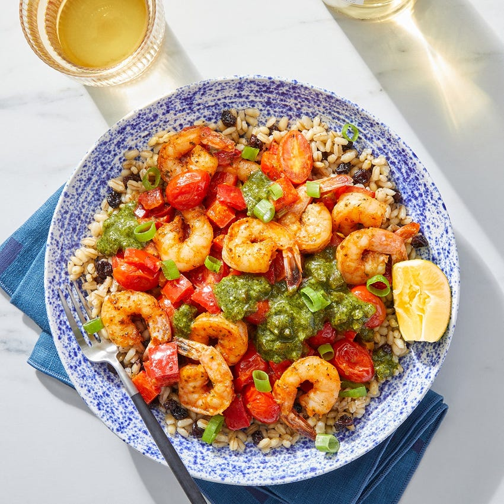

Chimichurri Shrimp

This hearty dish is bursting with bold, zesty flavors thanks to the herbaceous mix of cilantro sauce, pickled jalapeño, and fresh lemon juice (a nod to classic Argentinian chimichurri) that we're drizzling over our shrimp, sautéed vegetables, and barley.
- 10 oz Tail-On Shrimp (Peeled & Deveined)
- ½ cup Pearled Barley
- ¼ cup Cilantro Sauce
- 1 oz Sliced Pickled Jalapeño Pepper
- 4 oz Grape Tomatoes
- 1 Tbsp Weeknight Hero Spice Blend (Onion Powder, Garlic Powder, Smoked Paprika & Whole Dried Parsley)
- 2 Tbsps Dried Currants
- 2 Scallions
- 4 oz Sweet Peppers
- 1 Lemon
470 Cals
Calories
Total fat 20g
Saturated Fat 3g
Trans Fat 0g
Polynusaturated Fat 4g
Monounsaturated Fat 12g
Cholesterol 90mg
Sodium 780mg